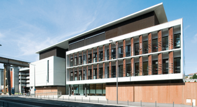

Les dernières actualités.

Projet Astral - Construction d’un ensemble de bureux au Plessis Robinson (92)
Découvrir
Construction du nouveau siège social de la C.A.F. du Gars (30)
Découvrir Construction de la délégation régionale du CNFPT à Poitiers (86)
DécouvrirNotre histoire
Depuis 1990, la revue "L'Architecture de votre région" propose un panorama détaillé de l'architecture d'une région, d'un territoire ou d'un pays.
Le concept.
Véritable vitrine de la création architecturale d'une région ou d'un pays, elle est réalisée avec le concours des architectes représentatifs de la construction, du bâtiment, de l'urbanisme, de l'environnement et de l'aménagement du territoire.
Notre histoire.
Depuis 1990, la revue "L'Architecture de votre région" propose un panorama détaillé de l'architecture d'une région, d'un territoire ou d'un pays. Les sondages réalisés attestent de sa durée de vie et par son aspect référentiel, de sa fréquente consultation. Une part prépondérante est laissée à "l'image" - le soin apporté aux reproductions photographiques est la garantie d'une attention particulière des lecteurs. La revue "L'Architecture de votre région" est le témoignage des hommes qui construisent aujourd'hui. Elle constitue ainsi la vitrine de leur création. Par sa diffusion ciblée, c'est aussi un support d'une exceptionnelle efficacité et porteur d'image pour tous les partenaires rédacteurs, entreprises, institutionnels et sociétés qui y participent.
Le concept.
Une approche régionale
Véritable vitrine de la création architecturale d'une région ou d'un pays, elle est réalisée avec le concours des architectes représentatifs de la construction, du bâtiment, de l'urbanisme, de l'environnement et de l'aménagement du territoire. Pour chaque architecte volontaire et dans chaque région, un reportage complet est publié avec son logo, ses coordonnées, sa raison sociale, 3 à 4 photos par réalisation et un rédactionnel détaillé auxquels s'ajoute une fiche technique comprenant maâtre d'ouvrage, maître d'œuvre, surface, durée, coût des travaux, entreprises, fabricants et fournisseurs utilisés.
Une présence régionale, nationale et international
Ce travail de fourmis permet de présenter l'actualité architecturale en région. Chaque revue devient donc un véritable outil de travail pour les professionnels de l'architecture et de la construction appartenant ou non à la région concernée (architectes, bureaux d'études, bureaux d'ingénierie, professionnels du BTP, conseils régionaux, généraux, mairies, HLM, SEM, Préfectures, DDE, promoteurs, CCI, PME-PMI). Ainsi, la revue est une vitrine pour chaque architecte, quelle que soit sa taille et sa situation géographique. De même, l'annonceur peut définir l'étendue de sa campagne : la limiter à une seule région, l'étendre à plusieurs régions ou à un pays. En effet, la présence de la revue dépasse le cadre hexagonal. En Outre-mer, la Martinique, la Guadeloupe, la Réunion et la Guyane. En Europe, la Belgique et la Suisse. Sur le site www.larchitecture.com accédez à la plus grande base d'appels d'offres franûais et internationaux, publics et privés. Vous pouvez consulter les offres par zones géographiques, types de marché, savoir-faire, matières travaillées, etc. Ce site a pour ambition de devenir le site portail de l'architecture et de la construction.